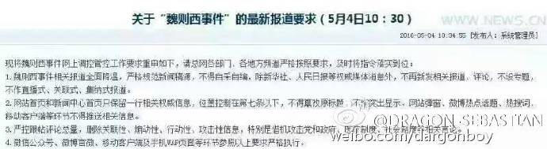

老杨急就章系列（15）
大恶人就在眼前，怎么会找不到？- 老杨再谈魏则西之死
by 长沙杨飞
六神磊磊前天发了一篇微信长文《找不到大恶人的时代》，瞬间阅读量就到了十万加，点赞者众。这篇文章说魏则西死了，百度、医院和政府到底谁是最大的恶人，这事说不清楚。唉，和稀泥也不是这么搞的吧。我觉得魏则西这事是可以说清楚的。
我个人认为，莆田系医生（和医院）涉嫌诈骗，是主犯，应该占40%的责任。
其次，数百家公立医院以及80家武警和军队医院是从犯，应该占20%的责任。他们把医院（科室）违规出租给莆田系骗子，给他们提供诈骗场所。
第三，百度、报纸、杂志、电视台等为莆田系背书、站台和呐喊的，也都是诈骗从犯，并涉嫌违反广告法，应该占15%的责任。为莆田系站台的还包括不少明星和政治人物，包括某位前国务委员兼全国人大副委员长。
第四，卫生部以及中央军委后勤部卫生局作为地方和军队医院的监管部门，工作严重失职，应该负25%责任。这两个部门有关人员涉嫌渎职。
责任分清楚了，就可以开始分别追究，可以由魏则西的家人起诉（考虑刑事附加民事赔偿），也可以由检察院提起公诉。抓哪些人，是检察院的事。判多少年，是法院的事。
卫生部和军委卫生局应该吸取教训，从此对医院严加监管。网信办和工商局对各种医疗诈骗广告的处罚也是一样。若有再犯，从严处理。
魏则西21岁就病逝，这是他个人的悲剧。但如果我提的这四点责任追究能有结果的话，他个人的悲剧将在客观上促进这个社会的良性转变，就像孙志刚事件一样。2003年3月，23岁的孙志刚因未办暂住证被广州警察扣留，随后被殴打致死。这是他个人的悲剧。随着各大媒体的广泛报道，国务院在民众压力之下废除了臭名昭著的收容遣送制度，促进了社会的良性转变。
魏则西事件如果媒体和社会舆论要追下去的话，还有许多问题可以深挖，比如：
1， 莆田系诈骗医院十多年来被曝光了十几次，为啥他们的生意和势力却越做越大？
2， 人民子弟兵（的医院）本该为人民服务，为啥最后变成了专坑人民？
3， 军队的腐败是否只限于医院系？野战、装备、其他后勤系有没有严重的腐败问题？
4， 医疗卫生系统的腐败当然很严重，但中国政府的腐败问题是否只限于卫生部门？
答案当然是否定的。中国的政府腐败程度路人皆知。在透明国际2014年的政府清廉程度报告中，中国政府总分100分只得了36分，离及格都还差好远。我们的土壤、食品、空气、地下水等等都已经被严重污染，有钱人都排着队在离开这个国家。
离开这个国家，药品和医疗不尽人意当然也是原因之一。中国医改十几年基本是失败了，医疗费用让人民望空兴叹，医患矛盾严重恶化，人人都是一肚子怨气，除了那些有特殊医疗的老干部们。
在一个正常国家，如果民众给你打不及格，那这个国家的政府就得换届。但是这并不适用于中国。因为我们走的是有中国特色的社会主义道路，这里的政府本质上永不换届。再怎么腐败也只能让他们自查自纠，慢慢改。
但随着时间的过去，越来越多人不相信他们能改正。总体来说，一个人是很难有效地自己监督自己的。一个政党也是如此。一个人如果永不下台，等于是拥有无上和绝对的权利，而绝对的权利将导致绝对的腐败。这是放之四海而皆准的真理。
魏则西事件里面如果一定要说谁是最大的恶人，那就是这个社会制度，这个政治体系。魏则西事件所反映的社会之黑，实际上只是冰山一角。而中国人民对魏则西事件爆发出来的热烈讨论，实际上是人民总体不满情绪的一种宣泄。
在网易新闻客户端上，魏则西事件的各条新闻，读者跟帖数量多得吓人，动则几万十几万条。从5月1日魏则西事件开始报道，民众和媒体的讨论热潮不减，一直持续到5月4日早上都是如此。但5月4日上午11点之后，全国各大门户网仿佛约好了似的，一起在头版撤掉了魏则西事件的相关报道，有的还删除了评论。网易关于80家部队医院涉及莆田系诈骗的新闻报道，跟帖七万多条，上午11点之后被删得一条不剩。
能有权号令全国媒体的，大家猜猜是谁？昨天有朋友传来一张图片，大家看过之后应该就知道为啥魏则西事件的报道被突然降温：

这张图片说明，政府的网监部门不是傻子，他们也看出了人民正通过魏则西之死质问和追究事情的根源，开始威胁到其执政的稳定性了。所以，魏则西事件必须降温。这是来自北京的最高指示。
这个世界上要问什么东西最珍贵，那毫无疑问是生命和健康。本来通过魏则西事件，我们可以有效地改进百孔千疮的医疗和卫生体系，维护人民的生命和健康。但是，有那么一小撮人，他们认为人民的生命和健康并不是最重要的，永远坐在执政席上对他们来说才是最重要的。
魏则西在去世之前，他参与了知乎上一个问题讨论：你认为人性最大的恶是什么？我个人认为，人性最大的恶是谎言。莆田系的老板和所谓的医生们正是靠谎言榨取了巨额财富，他们口袋里的每一个铜板都滴着患者的鲜血。而这些滴着血的铜板很多又流进了百度和央视等帮凶的口袋里，流进了相关政府官员和军队官员的口袋里。他们口口声声为人民服务，实际乃是为人民币服务。他们在撒谎。
谎言是人性最大的恶。
杨飞，
2016/5/5，长沙
关注老杨作品：
1，杨飞摄影 www.midphoto.com
2，微信：yangfei789288
3，微信公众号：长沙杨飞
4，新浪微博@长沙杨飞
5，推特Twitter@feiyang17
6，Facebook：yangfei999999@hotmail.com